Banker App · UX Designer · Quicken Loans HackIT — The Hack Strikes Back
A Mobile Home Base for Mortgage Bankers Managing Every Client and Document
01 · Overview
About the Banker App
The Banker App was built to give mortgage bankers the ability to manage their loans on the go. Documents were the number one issue plaguing bankers day to day, since most of the loan process revolves around collecting the right paperwork from clients to keep a loan moving through underwriting. During HackIT — The Hack Strikes Back, Quicken Loans' Star Wars–themed hackathon held as part of Bullet Time, the company's dedicated innovation time, our team set out to build a mobile tool that put document status front and center, so a banker could see exactly what was missing and from whom, and follow up without being tied to a desk.
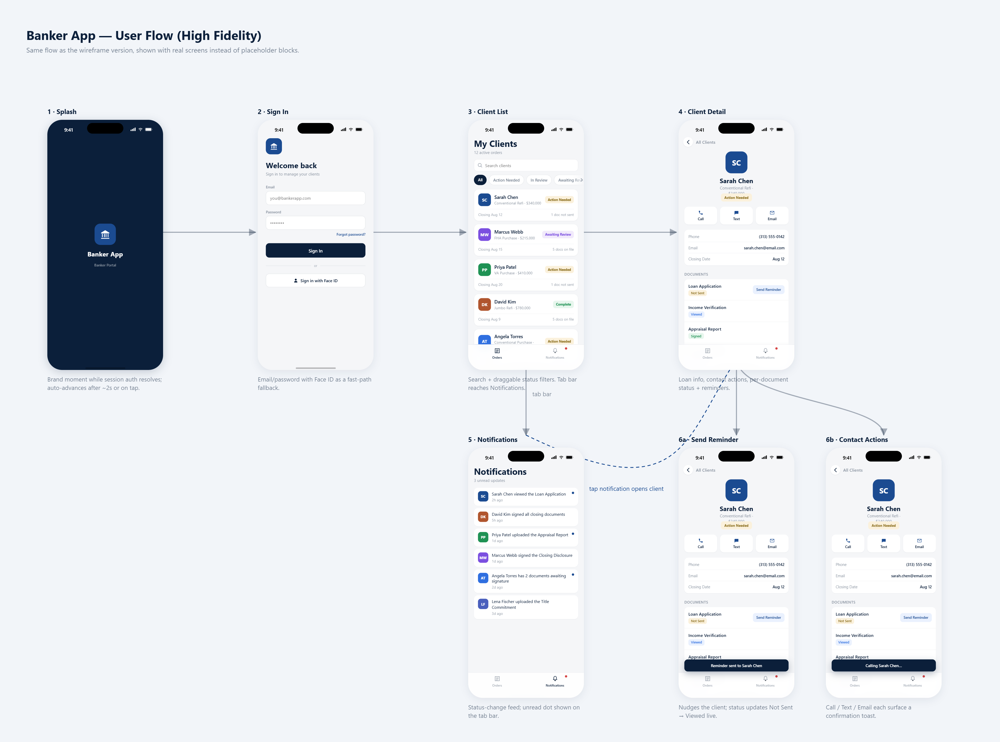
02 · The Problem
A Dozen Deals, No Single View
A banker's active client list is really a dozen small projects running in parallel, each with its own loan type, closing date, and document checklist. Without one place to see whose paperwork is stalled and who's ready to close, that tracking tends to live in scattered inboxes, calls, and memory, which makes it easy for a document sitting untouched to go unnoticed until it threatens a closing date.
03 · Approach & Flow
Status at a Glance, Action in One Tap
Working within HackIT's 24-hour window, our team designed the app around a single question a banker asks constantly: which of my clients need something from me right now? Every client card on the home list rolls up its documents into one status badge, so a banker can scan the whole book of business and immediately see who's waiting on a signature versus who's ready to close, without opening a single record.
A branded splash screen covers the app while the session resolves, auto-advancing to sign-in after a couple of seconds or on tap, with email/password and Touch ID as a fast-path fallback. From there, bankers land on My Clients: a search field, a row of draggable status filter chips (All, Action Needed, In Review, Awaiting Review, Complete), and the scrollable list of status-badged client cards.
Tapping into a client surfaces a detail view built for follow-through rather than just review: contact info, one-tap Call, Text, and Email actions each with a confirmation toast, and a document checklist where every item carries its own color-coded status pill (Not Sent, Viewed, Uploaded, Signed). Any document still at Not Sent shows a Send Reminder action that nudges the client and updates the status live, so closing the loop on a stalled document takes one tap instead of a separate outreach step. A tab bar reaches Notifications, a feed of status-change updates with an unread indicator; tapping a notification opens straight into that client's detail so a status change is never more than one tap from action.
04 · Key Screens
Screen by Screen
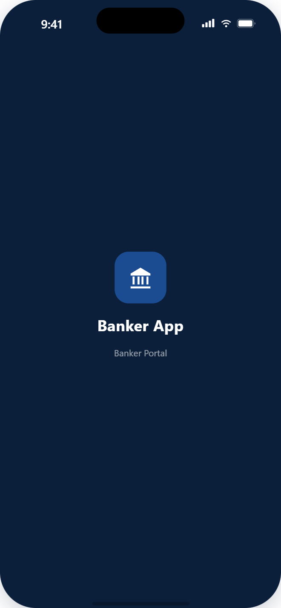
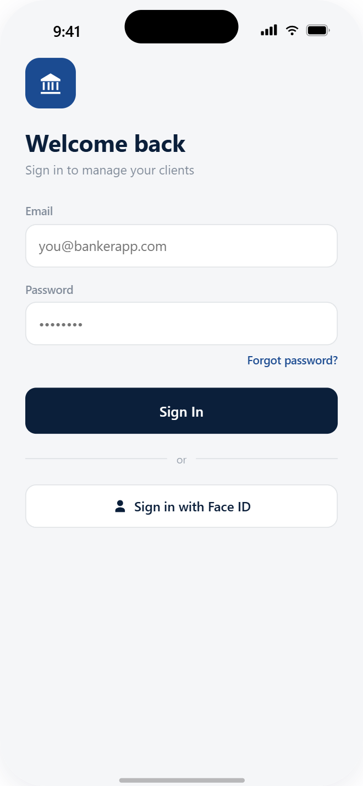
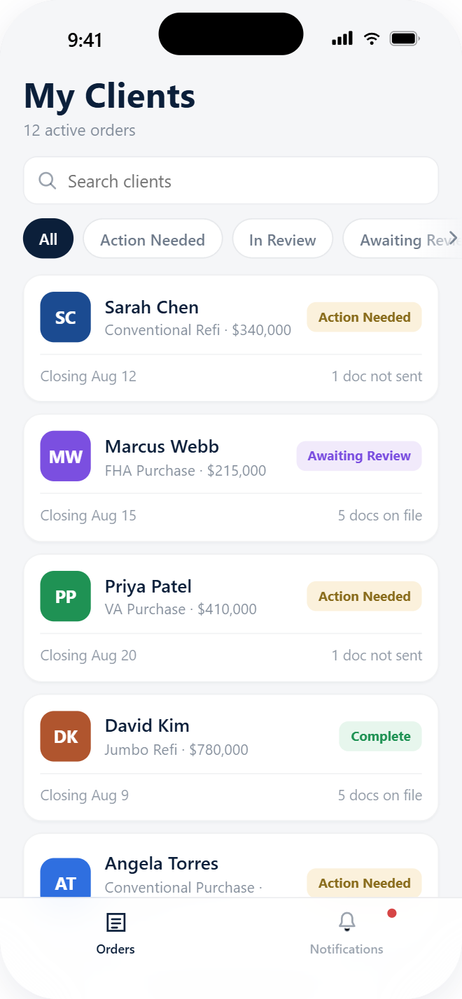
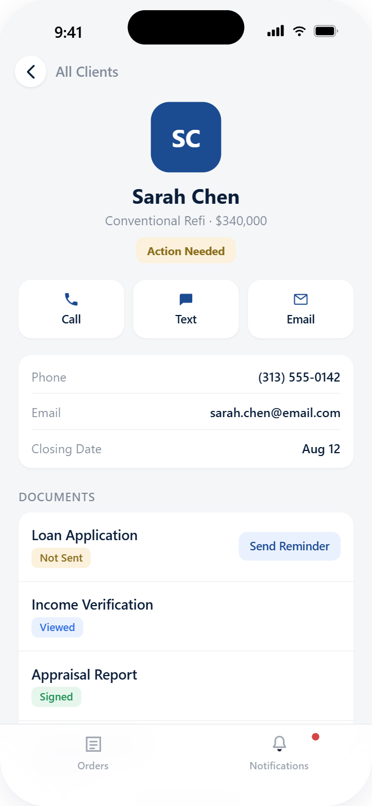
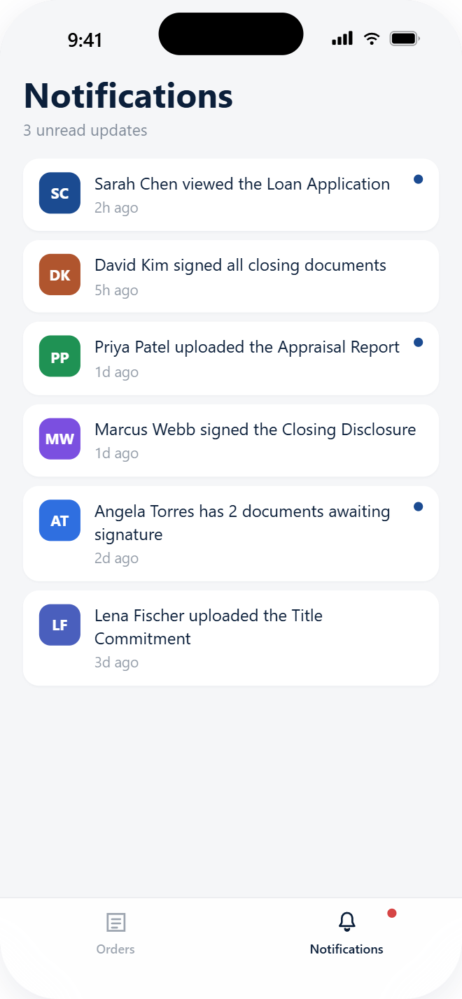
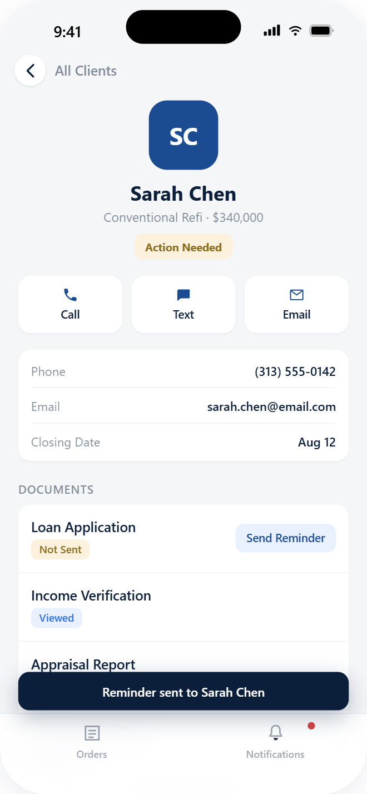
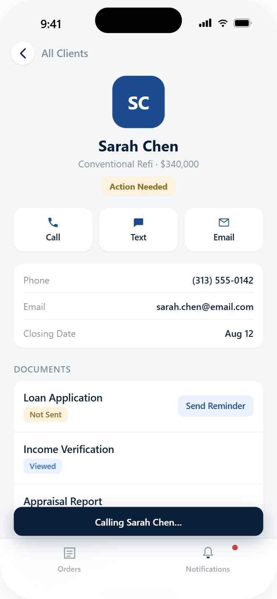
05 · Outcome
First Place for Business Innovation
By the end of the 24-hour hackathon, the team had a fully interactive mobile prototype: real client data, live status tracking across four document states, working search and filters, and one-tap contact and reminder actions with on-screen confirmation. The concept won first place for Business Innovation, judged largely on the productivity it stood to unlock: at a time when checking or updating a loan's status meant being back at a desk in the office, giving bankers that same visibility and ability to act from wherever they were had real potential to change how much of the day went to moving loans forward instead of waiting to get back to a computer.
Results
- 1st place for Business Innovation at Quicken Loans' HackIT.
- Untethered bankers from the desk, letting loan status and follow-up happen from wherever they were, at a time when that work was still confined to the office.
06 · Behind the Scenes
HackIT — The Hack Strikes Back
HackIT is Quicken Loans' hackathon, run under Bullet Time, the company's dedicated innovation time, and every year gets its own theme — this one went full Star Wars, from the team shirts down to the event timeline. Twenty-four hours, from doors open to winners announced, running straight through the night with the rest of the crowd.
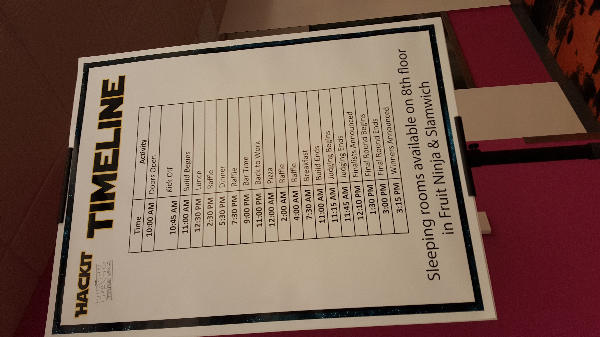
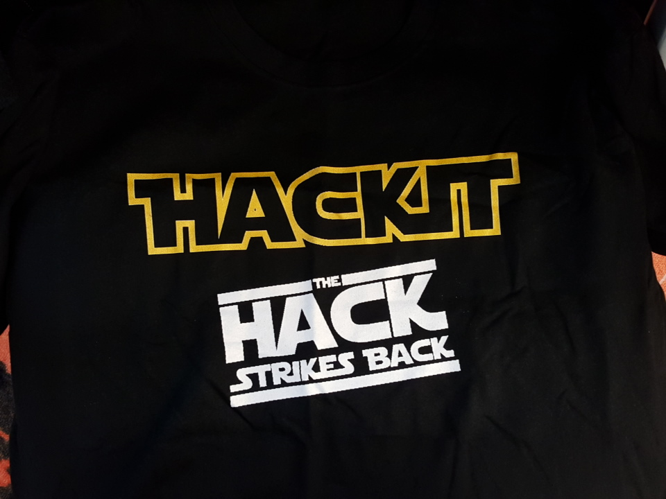
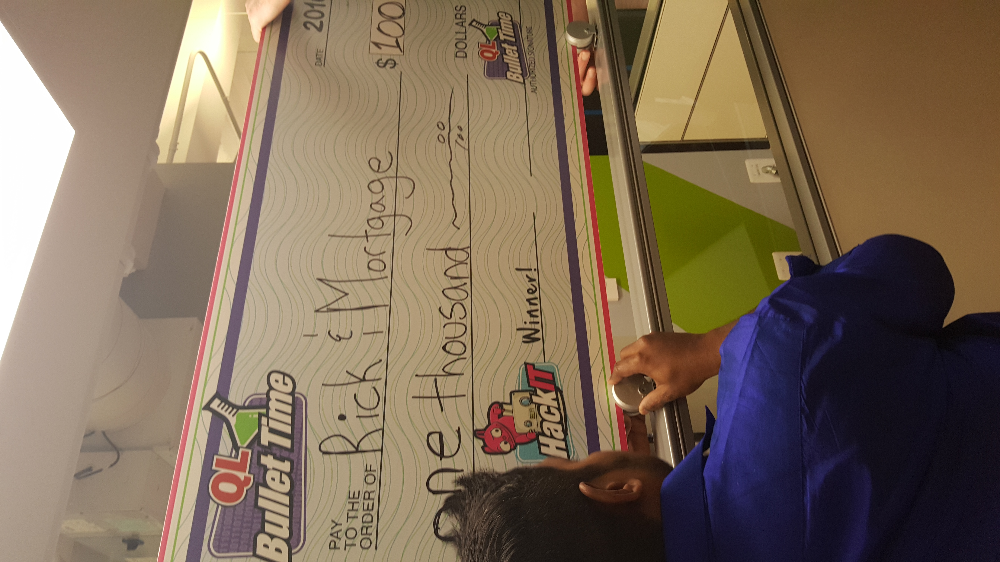